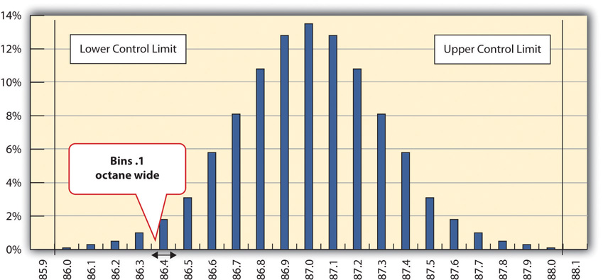
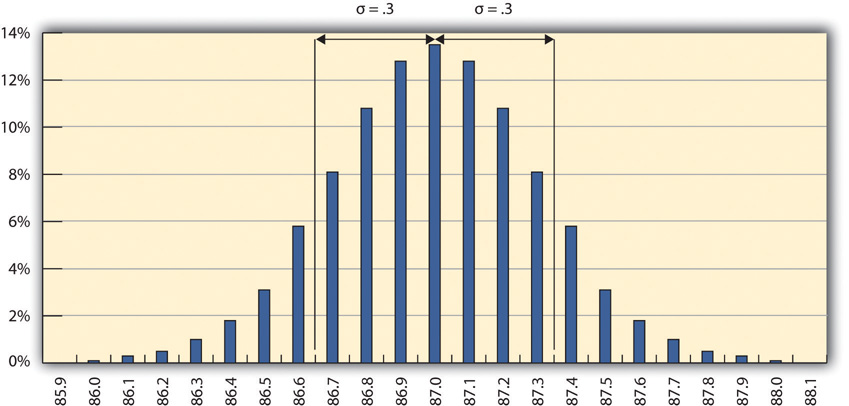
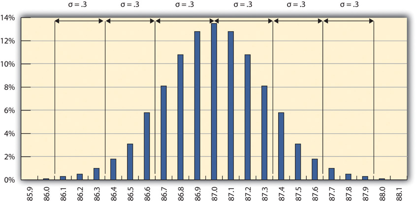
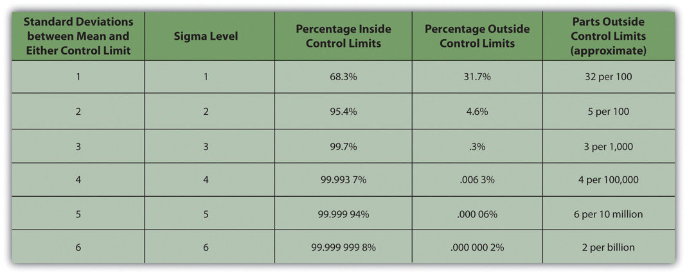
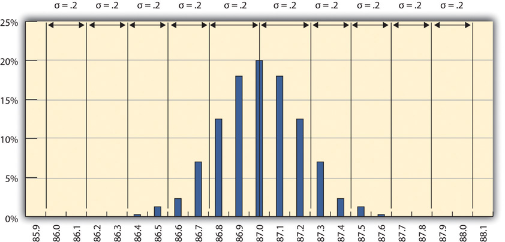

QualityDegree to which a set of inherent characteristics fulfill requirements. is a relative term, which means that something is of high or low quality compared to what it is required to be. According to the International Organization for Standardization (ISO), quality is “the degree to which a set of inherent characteristics fulfill requirements.”International Organization for Standardization, Quality Management Systems—Fundamentals and Vocabulary (Geneva: ISO Press, 2005), in Project Management Institute, Inc., A Guide to the Project Management Body of Knowledge (PMBOK Guide), 4th ed. (Newtown Square, PA: Project Management Institute, Inc., 2008), 190. The requirements of a product or process can be categorized or given a gradeCategory of product or service requirements.. The quality is determined by how well something meets the requirements of its grade. Consider the following examples.
Petroleum refiners provide gasoline in several different grades based on the octane rating because higher octane ratings are suitable for higher compression engines. Gasoline must not be contaminated with dirt or water, and the actual performance of the fuel must be close to its octane rating. A shipment of low-grade gasoline graded as 87 octane that is free of water or other contaminants would be of high quality, while a shipment of high grade 93 octane gas that is contaminated with dirt would be of low quality.
John has antique furniture that is in excellent condition that was left to him by his grandmother. The pieces are important to John for sentimental reasons and they are also valuable. John decides to hire movers (high-grade professionals) to load his furniture into the truck using appropriate padding and restraints to prevent dents and scratches during the long trip to Atlanta and then to unload the truck in Atlanta. John’s standard for high quality is that no observable damage occurs to his large pieces of furniture, especially the antiques. If the furniture arrives in his new apartment without a single dent, scratch, or other damage, the activity will be of high quality.
John’s standard for packing his kitchen is lower. His dishes are old and cheap, so he decides to trust his inexperienced friends (low-grade amateurs) to help him pack his kitchen. If a few of the dishes or glassware are chipped or broken in the process, the savings in labor cost will more than make up for the loss, and the dishes can be easily replaced. If John has a few chipped dishes and a broken glass or two by the time he is unpacked in Atlanta, he will consider the kitchen packing to be of high quality.
For most people, the term quality also implies good value—getting your money’s worth. For example, even low-grade products should still work as expected, be safe to use, and last a reasonable amount of time.
Determining how well products meet grade requirements is done by taking measurements and then interpreting those measurements. StatisticsMathematical interpretation of numerical data.—the mathematical interpretation of numerical data—is useful when interpreting large numbers of measurements and is used to determine how well the product meets a specification when the same product is made repeatedly. Measurements made on samples of the product must be between control limitsUpper and lower extremes of allowable variation.—the upper and lower extremes of allowable variation—and it is up to management to design a process that will consistently produce products between those limits.
A petroleum refinery produces large quantities of fuel in several grades. Samples of the fuels are extracted and measured at regular intervals. If a fuel is supposed to have an 87 octane performance, samples of the fuel should produce test results that are close to that value. Many of the samples will have scores that are different from 87. The differences are due to random factors that are difficult or expensive to control. Most of the samples should be close to the 87 rating and none of them should be too far off. The manufacturer has grades of 85 and 89, so they decide that none of the samples of the 87 octane fuel should be less than 86 or higher than 88.
If a process is designed to produce a product of a certain size or other measured characteristic, it is impossible to control all the small factors that can cause the product to differ slightly from the desired measurement. Some of these factors will produce products that have measurements that are larger than desired and some will have the opposite effect. If several random factors are affecting the process, they tend to offset each other most of the time, and the most common results are near the middle of the range. This idea is called the central limit theoremIdea that if variation is caused by several random factors, they will generally cancel each other out and most measurements will be near the middle of the range of variation..
If the range of possible measurement values is divided equally into subdivisions called binsEqual size ranges into which measurements are sorted to obtain a frequency distribution., the measurements can be sorted, and the number of measurements that fall into each bin can be counted. The result is a frequency distributionThe number of measurements that fall into defined bins. that shows how many measurements fall into each bin. If the effects that are causing the differences are random and tend to offset each other, the frequency distribution is called a normal distributionFrequency distribution that looks like a bell and is the result of offsetting random variations., which resembles the shape of a bell with edges that flare out. The edges of a theoretical normal distribution curve get very close to zero but do not reach zero.
A refinery’s quality control manager measures many samples of 87 octane gasoline, sorts the measurements by their octane rating into bins that are 0.1 octane wide, and then counts the number of measurements in each bin. Then she creates a frequency distribution chart of the data, as shown in Figure 10.1 "Normal Distribution of Measurements of Gasoline Samples".
If the measurements of product samples are distributed equally above and below the center of the distribution as they are in Figure 10.1 "Normal Distribution of Measurements of Gasoline Samples", the average of those measurements is also the center value that is called the meanAverage found by summing the values and dividing by the number of values. and is represented in formulas by the lowercase Greek letter µ (pronounced mu). The amount of difference of the measurements from the central value is called the sample standard deviation or just the standard deviationA type of average that takes into account positive and negative values where a sample is used instead of all the measurements. To calculate the standard deviation, first the difference between each value and the mean is squared. The squared values are summed and divided by the number of values minus one. The square root of this value is the standard deviation, also known as the Sample Standard Deviation.. The first step in calculating the standard deviation is subtracting each measurement from the central value and then squaring that difference. (Recall from your mathematics courses that squaring a number is multiplying it by itself and that the result is always positive.) The next step is to sum these squared values and divide by the number of values minus one. The last step is to take the square root. The result can be thought of as an average difference. (If you had used the usual method of taking an average, the positive and negative numbers would have summed to zero.) Mathematicians represent the standard deviation with the lowercase Greek letter σ (pronounced sigma). If all the elements of a group are measured, it is called the standard deviation of the population and the second step does not use a minus one.
Figure 10.1 Normal Distribution of Measurements of Gasoline Samples
The chart shows that the most common measurements of octane rating are close to 87 and that the other measurements are distributed equally above and below 87. The shape of the distribution chart supports the central limit theorem’s assumption that the factors that are affecting the octane rating are random and tend to offset each other, which is indicated by the symmetric shape. This distribution is a classic example of a normal distribution. The quality control manager notices that none of the measurements are above 88 or below 86 so they are within control limits and concludes that the process is working satisfactorily.
The refinery’s quality control manager uses the standard deviation function in his spreadsheet program to find the standard deviation of the sample measurements and finds that for his data, the standard deviation is 0.3 octane. She marks the range on the frequency distribution chart to show the values that fall within one sigma (standard deviation) on either side of the mean. See the figure below.
Figure 10.2
Most of the measurements are within 0.3 octane of 87.
For normal distributions, about 68.3 percent of the measurements fall within one standard deviation on either side of the mean. This is a useful rule of thumb for analyzing some types of data. If the variation between measurements is caused by random factors that result in a normal distribution and someone tells you the mean and the standard deviation, you know that a little over two-thirds of the measurements are within a standard deviation on either side of the mean. Because of the shape of the curve, the number of measurements within two standard deviations is 95.4 percent, and the number of measurements within three standard deviations is 99.7 percent. For example, if someone said the average (mean) height for adult men in the United States is 5 feet 10 inches (70 inches) and the standard deviation is about 3 inches, you would know that 68 percent of the men in the United States are between five feet seven inches (67 inches) and six feet one inch (73 inches) in height. You would also know that about 95 percent of the adult men in the United States were between five feet four inches and six feet four inches tall, and that almost all of them (99.7 percent) are between five feet one inches and six feet seven inches tall. These figures are referred to as the 68-95-99.7 ruleApproximate percentages of measurements that are within one, two, and three standard deviations of the mean..
The refinery’s quality control manager marks the ranges included within two and three standard deviations, as shown below.
Figure 10.3 The 68-95-99.7 Rule
Some products must have less variability than others to meet their purpose. For example, if one machine drills a hole and another machine shapes a rod that will slide through the hole, it might be very important to be sure that if the smallest hole was ever matched with the widest rod, that the rod would still fit. Three standard deviations from the control limits might be fine for some products but not for others. In general, if the mean is six standard deviations from both control limits, the likelihood of a part exceeding the control limits from random variation is practically zero (2 in 1,000,000,000). Refer to Figure 10.4 "Meaning of Sigma Levels".
Figure 10.4 Meaning of Sigma Levels
A new refinery process is installed that produces fuels with less variability. The refinery’s quality control manager takes a new set of samples and charts a new frequency distribution diagram, as shown below.
Figure 10.5 Smaller Standard Deviation
The refinery’s quality control manager calculates that the new standard deviation is 0.2 octane. From this, he can use the 68-95-99.7 rule to estimate that 68.3 percent of the fuel produced will be between 86.8 and 87.2 and that 99.7 percent will be between 86.4 and 87.6 octane. A shorthand way of describing this amount of control is to say that it is a five-sigma production system, which refers to the five standard deviations between the mean and the control limit on each side.
Using Statistical Measures
Choose two groups of people or items that have a measurable characteristic that can be compared, such as the height of adult males and females. Describe the distribution of the measurements by stating whether you think the groups have a relatively small or large standard deviation and whether the distributions overlap (e.g., some women are taller than some men even though the mean height for men is greater than the mean height for women). Demonstrate that you know how to use the following terms correctly in context: